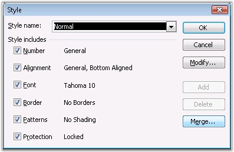
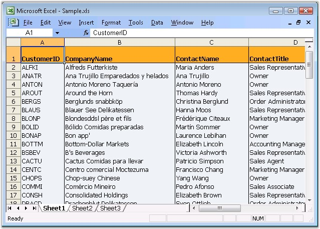

Microsoft Excel provides users, the ability to create and apply styles to cells, by accruing a few benefits. First, it gives the users a way to create a consistent-looking document, without the need to do plenty of direct formatting. Second, it gives the users the ability to quickly change the formatting of all cells that use a particular style.
This section explains various styles created by using XlsIO. Following are the styles discussed in this section.
Microsoft Excel provides support to create styles by using the Style dialog box (Go to the Format menu and click Styles command). It also permits to modify and add new styles, which can be applied to a range of cells.

Figure 44: Style Dialog Box
Applying Default style in XlsIO
XlsIO provides various ways to apply styles. IStyle interface is used for creating styles. You can set the default styles created with groups of styles to a range of rows and columns. This is the most optimized approach to format rows and columns with large number of cells with same styles.
Following code example illustrates how to create and apply default styles for a range of rows and columns.
|
[C#]
// Define the default styles that need to be applied to rows and columns. IStyle rowStyle = workbook.Styles.Add("RowStyle"); rowStyle.Color = Color.LightCoral; IStyle columnStyle = workbook.Styles.Add("ColumnStyle"); columnStyle.Color = Color.Orange;
//Set Column Default Style sheet.SetDefaultRowStyle(1, 2, rowStyle);
//Set Column Default Style sheet.SetDefaultColumnStyle(1, 2, columnStyle); |
|
[VB.NET]
'Define the default styles that need to be applied to rows and columns Dim rowStyle As IStyle = workbook.Styles.Add("RowStyle") rowStyle.Color = Color.LightCoral Dim columnStyle As IStyle = workbook.Styles.Add("ColumnStyle") columnStyle.Color = Color.Orange
'Set Column Default Style sheet.SetDefaultRowStyle(1, 2, rowStyle)
'Set Column Default Style sheet.SetDefaultColumnStyle(1, 2, columnStyle) |
 Note: Applying custom styles will override the
original styles.
Note: Applying custom styles will override the
original styles.
See Also
XlsIO provides support for adding and modifying common (or global) styles that can be applied to one or more cells in a workbook. These styles can be created and applied to several ranges of cells in the workbook. Note that the usage of common styles to format spreadsheets is the recommended approach, since setting a separate style for each cell can reduce the performance considerably.
Note: If you want to apply more than one style for
cells, enclose the style within the Begin and End calls. This will improve the
performance.
|
[C#]
// Formatting
// Global styles should be used when the same style needs to be applied to more than // one cell. This usage of a global style reduces memory usage.
// Header Style IStyle headerStyle = workbook.Styles.Add("HeaderStyle");
// Add custom colors to the palette. headerStyle.BeginUpdate(); workbook.SetPaletteColor(8, Color.FromArgb(255, 174, 33)); headerStyle.Color = Color.FromArgb(255, 174, 33); headerStyle.Font.Bold = true; headerStyle.Borders[ExcelBordersIndex.EdgeLeft].LineStyle = ExcelLineStyle.Thin; headerStyle.Borders[ExcelBordersIndex.EdgeRight].LineStyle = ExcelLineStyle.Thin; headerStyle.Borders[ExcelBordersIndex.EdgeTop].LineStyle = ExcelLineStyle.Thin; headerStyle.Borders[ExcelBordersIndex.EdgeBottom].LineStyle = ExcelLineStyle.Thin; headerStyle.EndUpdate();
// Body Style IStyle bodyStyle = workbook.Styles.Add("BodyStyle");
// Add custom colors to the palette. bodyStyle.BeginUpdate(); workbook.SetPaletteColor(9, Color.FromArgb(239, 243, 247)); bodyStyle.Color = Color.FromArgb(239, 243, 247); bodyStyle.Borders[ExcelBordersIndex.EdgeLeft].LineStyle = ExcelLineStyle.Thin; bodyStyle.Borders[ExcelBordersIndex.EdgeRight].LineStyle = ExcelLineStyle.Thin; bodyStyle.EndUpdate();
// Apply the defined styles. // Apply Body Style. sheet.UsedRange.CellStyleName = "BodyStyle";
// Apply Header style. sheet.Rows[0].CellStyleName = "HeaderStyle"; |
|
[VB.NET]
' Formatting
' Global styles should be used when the same style needs to be applied to more than ' one cell. This usage of a global style reduces memory usage.
' Header Style Dim headerStyle As IStyle = workbook.Styles.Add("Header Style")
' Add custom colors to the palette. headerStyle.BeginUpdate() workbook.SetPaletteColor(8,Color.FromArgb(255,174,33)) headerStyle.Color = Color.FromArgb(255,174,33) headerStyle.Font.Bold = True headerStyle.Borders(ExcelBordersIndex.EdgeLeft).LineStyle = ExcelLineStyle.Thin headerStyle.Borders(ExcelBordersIndex.EdgeRight).LineStyle = ExcelLineStyle.Thin headerStyle.Borders(ExcelBordersIndex.EdgeTop).LineStyle = ExcelLineStyle.Thin headerStyle.Borders(ExcelBordersIndex.EdgeBottom).LineStyle = ExcelLineStyle.Thin headerStyle.EndUpdate()
' Body Style Dim bodyStyle As IStyle = workbook.Styles.Add("BodyStyle")
' Add custom colors to the palette. bodyStyle.BeginUpdate() workbook.SetPaletteColor(9,Color.FromArgb(239,243,247)) bodyStyle.Color = Color.FromArgb(239,243,247) bodyStyle.Borders(ExcelBordersIndex.EdgeLeft).LineStyle = ExcelLineStyle.Thin bodyStyle.Borders(ExcelBordersIndex.EdgeRight).LineStyle = ExcelLineStyle.Thin bodyStyle.EndUpdate()
' Apply the defined styles. ' Apply Body Style. sheet.UsedRange.CellStyleName = "BodyStyle"
' Apply Header style. sheet.Rows[0].CellStyleName = "HeaderStyle" |

Figure 45: XlsIO with Global Styles
For More Information Refer: